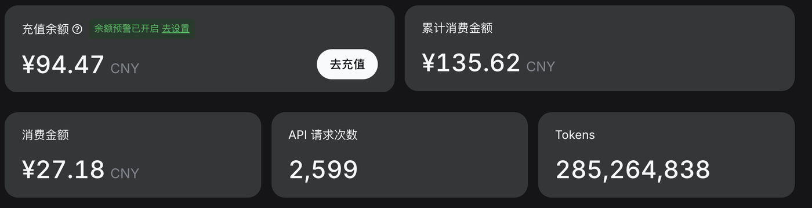

▁ marks a leading space · Celestial → Cel + estial
≈5
characters / English word including the space, typical
≈4
characters / token English rule of thumb
≈1.3
tokens / English word ≈ 5 ÷ 4
50k–200k
typical vocabulary size 50k – 200k
WhyCharacters: little information, 4–5× longer→Words: vocabulary explodes (millions)→Subwords: the compromise
Subwords are an engineering compromise between sequence length and vocabulary size.
01 / token
The vocabulary: a fixed lookup table
IDToken
290▁the
2392▁book
2500This
18864▁fundamental
23753▁concepts
52347▁mechanics
134437▁celestial← query
199999<|endoftext|>special
8 rows shown200,019 rows in total
200,019
o200k · GPT-4o generation
0
50kGPT-2
100kGPT-4 gen
128kLlama 3
200kGPT-4o gen
200,019 × 4,096 ≈820M parameters
An ID is a row number; changing models means changing the table.
01 / token
Tokens: the unit of model and bill
The model computes in tokens; the bill does too.

≈ 0.3 token
per English character
≈ 0.6 token
per Chinese character
One call · off-peak
100k input + 2k output
¥0.01cache hit
¥0.11cache miss
Same context, cache hit vs miss: an order of magnitude.
A token is the smallest unit of both the model and the bill.
01 / token
Text becomes an ID, then a vector
Piece
problem
A unit after tokenization
→
ID
4792
Row 4792 of the vocabulary
→
Vector
0.12 −0.44 0.08 …
4,096 dimensions · learned
The ID is an address; the vector is the content.
02 / model
What the model does: input → probability distribution
Input tokens
Fromthenexttokentothe
Model
Transformer
N layers · self-attention
softmax(z)
theorem41%
problem22%
model12%
step8%
other17%
|V| = 200,019 Σy pθ(y | x1:t) = 1
A scorer: it gives every token in the vocabulary a score, then turns scores into probabilities.
03 / training
Training: pretraining and post-training
Stage 01
Pretraining
Large-scale text, code and other data Learn language, knowledge and patterns
→
Stage 02
Post-training
SFT · Supervised fine-tuning
Learn by example
Shape responses and task behavior.
RL · Our focus
Learn from reward
Try, evaluate, improve the policy.
Our focus is RL: improving problem-solving through reward.
03 / training
Pretrain: read the internet once
Data
Trillions of tokens
Web pages, code, papers, books
Compute
1k–10k GPUs
Months of training
Output
base model
Completes text; SFT teaches it to answer
It learns the world's statistical structure; tasks come later.
03 / training
The first 20 tokens, 19 samples
Foundations of Celestial Mechanics · blurbThis book systematically introduces the fundamental concepts and theorems of celestial mechanics, together with a selection of representative research results. It has five chapters: the two-body problem; the restricted three-body problem; the perturbed two-body problem; resonance phenomena in celestial motion; and order and chaos in conservative systems.
Public material covers part of the method; the full training recipe stays private. Note the asymmetry: some results are easy to verify, hard to prove. Quotes below are public statements, excerpted or paraphrased.
Date
System / work
Public statement
Reading
2023.12
FunSearch
"pairing a pre-trained LLM ... with an automated evaluator"
search
2024.01
AlphaGeometry
"100 million synthetic theorems and proofs"
synthetic data
2024.07
AlphaProof
autoformalization → Lean; RL + test-time RL
formalization
2024.09
o1
"spend more time thinking through problems"
reasoning
2025.01
R1
"directly apply RL ... rule-based rewards"
RLVR
2025.05
AlphaEvolve
"evolutionary coding agent"
evolve code
2025.07
IMO 2025
"natural language ... no tools"
end to end
2026.09–10
OpenAI
NS breakdown claim; 372 families, 722 manuscripts at launch
open problems
The keywords change; the underlying move stays: propose, verify, search again.
05 / AI × math
The common pattern: generate → verify → search
Generate
LLM
Candidate proofs, programs, constructions
→
Verify
Lean / tests / numerics
Returns right or wrong, a score, a counterexample
→
Search / learn
best-of-N · trees · evolution · RL
Turns the signal into the next policy
↺ Back to the generator: the next round is stronger
Manual only
Review stays manual; scale stalls
One shot
One draw per attempt; luck decides
Both
Probability is filtered into correctness, then written back into the model
The model supplies probability; the verifier supplies the gradient.
05 / AI × math · Two search concepts
DAG: dependencies. MCTS: where to search next.
DAG · Directed Acyclic Graph
A dependency structure
Nodes: lemmas and subgoals Directed edges: premises → conclusion No cycles; shared lemmas can be reused
MCTS · Monte Carlo Tree Search
A search policy
Nodes: states; branches: candidate actions Select → expand → evaluate → back up Balance exploration and exploitation
DAG: “What depends on what?” MCTS: “What should we try next?”
05 / AI × math
My assessment: proof graphs are evolving; the route is still maturing
The mechanism is a hypothesis; the bottlenecks are real.
01 · Structure: DAG
Nodes hold subgoals; edges record dependencies; proved lemmas are reusable.
02 · Evolution: Agent + Lean
Select a node, let the agent attempt, let Lean check; fix on success.
03 · System bottleneck
Organize search
Decomposition · node selection Shared state · budget Long-run stability at 10⁴ concurrency
04 · Model bottleneck
Find the key step
Useful lemmas · new constructions Long-range reasoning · strict proof
Lean guards formal logic; system and model together determine how far we go.
05 / AI × math · 2026-10-06
OpenAI: research mathematics at batch scale
From a single demonstration to a collection for review and follow-on research.
722
Manuscripts at launch
372
Related result families
≈4,000
Problems attempted
What was released
Manuscripts and proof artifacts Lean formalizations for some results 10 reasoning summaries; compute data
How I read the numbers
One family: several papers 3 Pro hours: compute equivalent Truth, novelty, significance: review
Candidate results arrive in batches; verification and understanding matter.
05 / AI × math · 2026-09-08
Navier–Stokes: a long-running multiagent effort
OpenAI reports finite-time breakdown in smooth, forced 3D incompressible flow.
Scope of the reported result
Positive viscosity; smooth data & force Whole space ℝ³ and periodic flow Finite-time breakdown; Clay C / D
A breakdown construction; unforced NS is separate.
≈10⁴
Agents
88 h
Find argument
+17 h
Formalize
130B
Output tokens
Explore in groups → consolidate findings Share → search further → Lean checks 10k agents → scheduling, checkpoints, retries, stopping
Check the logic; also audit the problem–statement–paper correspondence.
05 / AI × math · systems view
Theorem-cracking system: LLM as CPU
Not just a mathematics problem; a machine for throughput and stability.